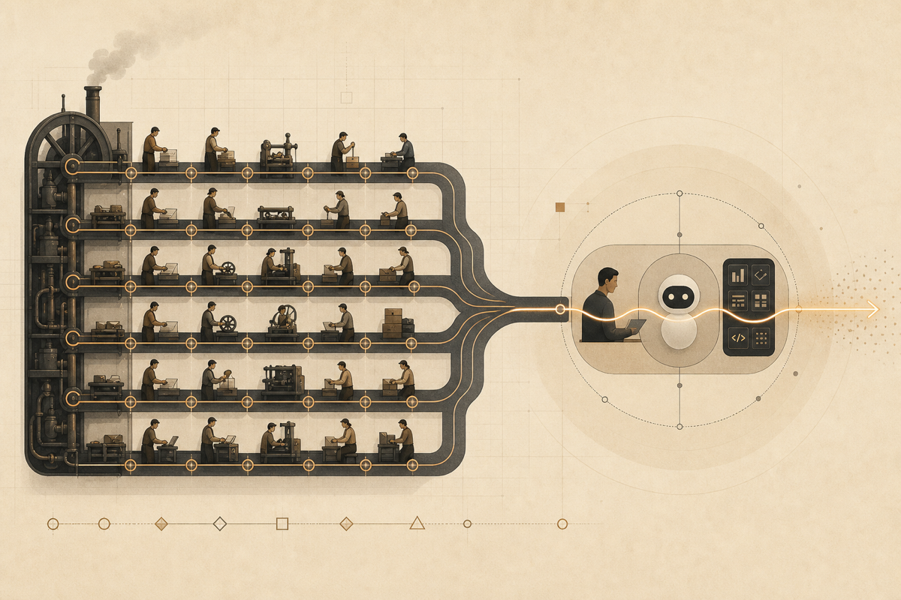
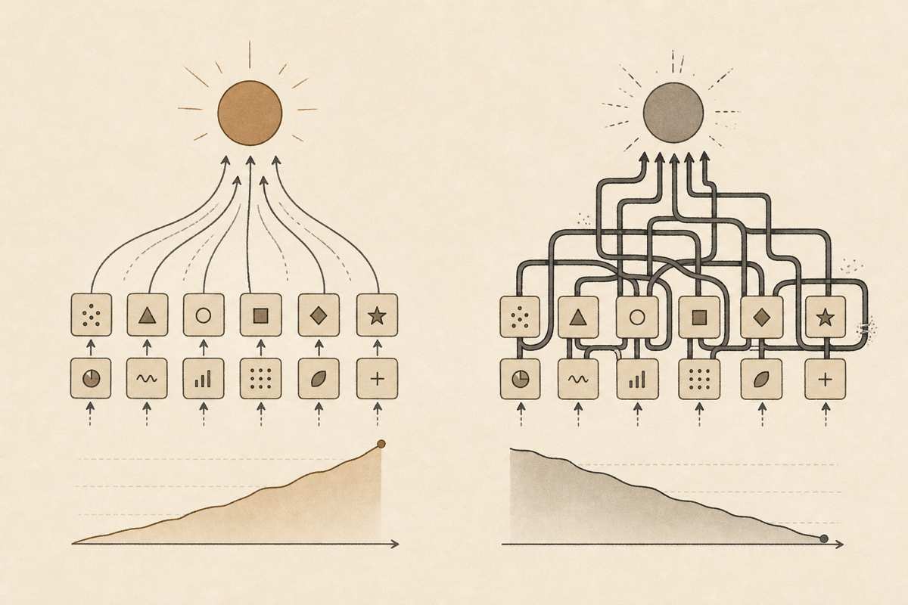

《分工之后》
AI时代经济学上的一朵乌云。

核心判断：这本书不是说现代经济学错了，而是说现代经济学建立在“分工收益大于协调摩擦”的旧生产力条件上；AI 正在增强单个行动单元，让过细分工的摩擦成本变成新瓶颈。
目录
序章
《分工之后》序章
AI时代经济学上的一朵乌云
序章：乌云从哪里来
过去两百多年里，现代经济学最深的信念之一，是分工带来效率，交换整合分工，市场扩展分工，企业在必要时组织分工，而财富则在这一整套结构中不断增长。无论后来的理论分支如何分化，这条从《国富论》出发的主线始终没有真正离场。现代社会之所以能够把无数有限能力的人组织成庞大而稳定的生产体系，靠的正是分工。
从这个意义上说，分工并不只是经济学中的一个局部概念。它是现代生产观的一块基石。过去的人类社会之所以能够不断提高效率、扩大产出并维持质量，不是因为个体突然变得全能，而是因为复杂生产过程被切分成更小的环节，并由不同的人长期专门承担。分工提升了熟练度，降低了学习门槛，稳定了流程，也让交换与组织成为可能。
因此，如果我们要理解现代经济学为什么成立，就必须先理解它背后的生产力现实。过去的生产力水平决定了单个人的能力边界，也决定了最优的生产组织方式。在一个执行成本高、学习成本高、工具能力有限的世界里，分工几乎是唯一理性的答案。围绕分工，现代社会逐步形成了一整套生产关系：岗位被细分，技能被专业化，企业以层级管理来协调内部劳动，市场以交换来重新连接彼此分离的生产环节。
正因为如此，现代经济学关于效率、组织与协作的大量核心直觉，实际上都建立在分工的历史合理性之上。价格为什么重要？因为分工后的世界需要交换来重新整合。企业为什么存在？因为市场协调分工并不总是低成本的。制度为什么重要？因为分工越深，合作越复杂，越需要稳定的激励与约束。可以说，分工不仅塑造了生产过程，也塑造了整个现代经济学的问题意识。
但今天，一片新的乌云正在出现。
这片乌云并不是因为过去的经济学突然错了，也不是因为市场、企业和组织会一夜之间失去意义。真正的变化发生在更深的地方：生产力在变。尤其是在 AI、模型、工具链与 agent 系统不断增强的背景下，单个行动单元的生产力边界开始扩大。过去必须依靠多岗位切分、多轮交接和严格专业化协作才能完成的任务，正在越来越多地被更少的人配合更强的工具完成。执行成本下降了，能力半径扩大了，过去那套建立在高执行成本之上的分工逻辑，开始第一次大面积遭遇新的压力。
这时，问题就不再只是“分工能否提升效率”，而是“分工的净收益是否仍然足够大”。因为分工从来不是没有代价的。任务一旦被拆开，就必然带来沟通、交接、对齐、监督、验收和责任划分等摩擦成本。过去，这些成本之所以没有成为主角，是因为分工收益太高；而今天，当执行能力变得更廉价、更通用、更可被调用时，原本被掩盖的摩擦开始浮上水面，并一步步逼近系统的中心。
于是，现代经济学大厦上真正出现乌云的地方，并不在它最显眼的结论，而在它最深的默认前提。过去我们默认，任务切得更细，组织就更高效；岗位分得更清，协作就更稳定；专业化不断深化，社会总体效率就会继续提高。但这些判断都隐含着一个历史条件：单个行动单元的能力边界是狭窄的，执行本身是昂贵的。现在，这个条件正在变化。
如果生产力决定生产关系，那么新的生产力条件迟早会逼迫新的生产关系出现。过去的生产力催生了分工型生产关系，而今天新的生产力条件，则开始让这种生产关系逐渐失去最优性。这里所谓的失去最优性，并不是说分工会整体消失，而是说过细分工不再天然等于更高效率；相反，它越来越可能转化成新的摩擦来源。
因此，本书真正要讨论的，并不是“经济学是否终结”，而是一个更克制、也更根本的问题：当生产力条件已经发生变化时，建立在旧生产力基础上的分工型生产关系、组织形态和经济学直觉，还能在多大程度上继续成立？如果它们开始失去适配性，那么新的效率原则、新的组织逻辑以及新的经济学问题意识，又会从哪里出现？
这就是这片乌云的来处。
第一章
《分工之后》第一章
第一章：分工为何带来效率？
在进入批判之前，这一章必须先替旧理论辩护。
如果我们不能说明分工为什么在过去极其成立，那么后面关于摩擦成本、主要矛盾转移和组织形态重写的讨论，就都会显得轻浮。因为问题从来不是分工这件事本身愚蠢，而恰恰相反：在过去的生产力条件下，分工不仅合理，而且几乎是唯一理性的答案。现代社会围绕生产、交换、企业与制度建立起来的一整套经济学直觉，正是因为它曾经如此正确，才值得今天被重新审视。
这一章要说明的，不是一个抽象命题，而是一段历史现实。过去的人类社会并不是面对一群能力无限、工具通用、执行廉价的行动者。过去的世界里，单个人的能力边界狭窄，学习一门技能要花很长时间，执行本身成本高昂，工具又往往专用而昂贵。在这样的条件下，要想提高产出、保障质量、扩大生产规模，就只能把复杂任务拆分成更小的部分，让不同的人长期承担不同的环节。分工不是一种观念偏好，而是那个时代最适配生产力的生产组织原则。
一、分工首先解决的是人的能力边界
任何生产活动，都以人的有限性为前提。
一个人一天的时间有限，注意力有限，身体动作的精度有限，能够掌握的技能数目也有限。只要生产稍微复杂一点，个体就不可能在所有环节上都同时达到高水平。一个人既要理解原料，又要设计流程，又要熟悉工具，又要保证质量，还要协调上下游，这种“全能生产者”只可能出现在生产规模很小、技术密度很低、质量要求不高的条件下。一旦社会进入持续增长与复杂化的阶段，这种组织方式就会迅速触到天花板。
分工的第一个伟大之处，就在于它把“人的有限性”转化成了“系统的可扩展性”。复杂生产过程不再要求每个人都掌握全部技能，而是要求不同的人在不同环节上形成稳定专长。原来一个人无法完成的事情，可以通过任务切分和协作重新被做出来。原来必须以“全能”为前提的生产过程，变成了可以由许多有限能力的人共同完成的系统。
因此，分工首先不是为了让人更自由，而是为了让生产更可能。它把复杂性从单个人身上卸下来，分散到不同岗位和不同环节之中。正因为人的能力边界有限，分工才会成为大规模生产的前提。
二、分工带来效率，不只是因为“各做各的”
把任务切开，本身并不会自动带来效率。分工之所以真的能够提高效率，是因为它至少同时带来了四种收益。
第一种收益，是熟练度的积累。一个人长期重复同一类动作，理解同一类问题，处理同一类例外情况，就会比不断切换任务的人更快、更稳、更少出错。工业时代的大量效率提升，并不是来自个体突然更聪明，而是来自长期专门化带来的熟练度增长。分工让“经验”能够沉淀，进而转化为产出和质量。
第二种收益，是切换成本的节省。如果一个人今天做设计，下一刻做采购，再下一刻做制造，之后又去验收，他就会不断在任务之间切换。每一次切换都意味着重新进入情境、重新调动知识、重新适配工具。分工把这种切换压低了。每个人只需处理自己负责的那一段，认知和动作就都能维持在一个较稳定的轨道上。
第三种收益，是工具和流程的专用化。当任务长期固定在某一环节时，工具可以为这一个环节优化，流程也可以围绕它稳定下来。某些机器之所以存在，不是因为它们普遍适用于一切任务，而是因为高度分工让某个环节值得被单独优化。分工不仅提高了劳动者的效率，也提高了工具和流程的适配程度。
第四种收益，是质量的可控制性。当任务被拆成较清楚的环节后，每个环节都更容易被观察、训练、标准化和纠偏。一个复杂系统不再只能整体成败，而可以在每一个局部被监测和修正。于是，分工不仅提高了速度，也降低了整体系统的不确定性。
所以，“分工带来效率”这句话的真正含义并不是一句口号。它背后至少包含了熟练度积累、切换成本下降、工具专用化和流程可控性增强这几层机制。正因为这些机制同时成立，分工才在过去长期表现得如此有力量。
三、分工不只是一种生产技巧，它塑造了现代组织
一旦分工成为主要的效率来源，社会的组织形态就会围绕它重新搭建。
首先出现的是岗位化。既然每个环节都值得被单独优化，那么组织就会越来越倾向于把任务写成岗位，把岗位写成职责，再把职责转化为训练、考核和晋升路径。岗位并不是天然存在的，它是分工逻辑在组织中的固定化表达。
其次出现的是专业化。社会开始奖励那些愿意把时间长期投向某一类窄而深技能的人。教育、职业路径、行业划分乃至身份认同，都会逐渐围绕专业化来组织。人不再被期待什么都懂，而是被期待在某一个局部持续变强。
再次出现的是企业内部的层级管理。当任务被拆分成许多环节后，就需要一种机制把它们重新排列、衔接和监督。市场可以协调一部分分工，但并不能在所有场景中都低成本地完成这种协调，于是企业作为组织形式出现并扩张。企业内部的层级制、命令链和流程制度，本质上都是为了让被拆开的生产环节重新拼成一个稳定整体。
最后出现的是市场范围的扩大。分工越深，单个行动者对他人产出的依赖就越强，于是交换就越重要。每个人只生产一小段，社会却需要完整产品和完整服务，于是必须通过交换体系把这些局部重新整合。市场不是分工的替代物，而是分工扩展之后的必要补充。
因此，分工从来不只是“工厂内部如何安排人手”的问题。它会一路外溢，塑造岗位、专业、企业、市场乃至整个现代社会的组织方式。现代经济学为什么如此重视交换、企业、制度和价格机制？因为这些问题都建立在一个更深的前提之上：社会已经进入了一个以分工为基础的生产世界。
四、现代经济学的很多直觉，其实都站在分工之上
如果把现代经济学最深的若干直觉往回追，会发现它们大多站在分工这块地基上。
价格为什么重要？因为分工让每个人只能掌握局部产出，价格帮助这些局部在更大的交换体系中找到彼此。企业为什么存在？因为市场并不能总是低成本地协调被拆开的所有环节，企业于是成为重新组织分工的一种形式。制度为什么重要？因为分工越深，合作链条越长，复杂协作越依赖稳定的预期、激励和约束。甚至增长为什么成为现代经济学的中心问题，也与分工有关，因为生产率的持续提升在很大程度上正是建立在分工深化之上的。
换句话说，分工并不是现代经济学中的一个局部章节，而更像是它的历史起点之一。它塑造了问题意识，决定了哪些现象最值得解释，也决定了哪些组织形式会被默认视为合理。在旧的生产力条件下，这套直觉不只是成立，而且是高度成功的。
这也是为什么今天不能轻率地说“过去的经济学错了”。恰恰相反，过去的经济学之所以值得被认真对待，是因为它把一个时代最重要的生产问题看得很准。它准确地抓住了：在单个行动单元能力有限、执行成本高昂的世界里，分工是效率的主轴。
五、分工的历史正确性，也意味着它有历史条件
然而，正因为分工曾经如此正确，我们才更需要看清它成立的前提。
分工并不是脱离时代条件而永远成立的纯抽象真理。它成立，依赖的是一组具体而强硬的现实约束：人的能力边界狭窄、执行成本高、学习慢、工具专用而昂贵、流程标准化收益大于协调成本。只要这组约束存在，分工就会表现为最优原则；但这也意味着，分工的优势并不是无条件的，而是与某种生产力现实捆绑在一起。
这一点非常关键。因为后面整本书并不是要否定分工的历史正确性，而是要说明：一旦支撑分工优势的那组条件开始变化，分工的净收益结构也就会随之变化。过去我们看到的是分工如何提升效率，接下来必须看到的是分工为了提升效率，究竟付出了哪些被长期忽视的代价。
六、本章结论：分工曾经极其成立
因此，这一章的结论应当非常明确：分工在过去不仅成立，而且极其成立。
它成立，不是因为人类喜欢把工作切碎，而是因为在旧的生产力条件下，这是提高产出、稳定质量、扩展规模和组织复杂协作的最佳方式。围绕分工，人类社会才逐步形成了岗位化、专业化、企业层级制和市场交换体系，现代经济学的大量核心直觉也才拥有了自己的现实地基。
但也正因为如此，分工从来不是一个单纯的技术选择。它是一种历史地塑造了整个现代社会的生产组织原则。只有先承认这一点，我们才能继续追问：既然分工如此成功，它在效率之外又隐藏了哪些成本？为什么这些成本在今天开始重新浮上水面？以及，当新的生产力条件已经出现时，我们是否还能够继续毫无保留地把分工当作天然答案？
这些问题，正是下一章的开始。
第二章

《分工之后》第二章
第二章：分工收益与摩擦成本的矛盾。
第一章替旧理论辩护，说明了分工为什么在过去极其成立；这一章则要把另一面补上。因为如果我们只看到分工带来的效率，而看不到它同时制造的代价，那么后面对 AI 时代组织形态的讨论就会失去真正的支点。问题从来不是分工有没有价值，而是分工的价值究竟以什么代价实现，以及这些代价在什么条件下会开始反过来吞噬收益。
这件事必须说得更准确一些。分工从来不是“把一个复杂问题拆开之后，复杂性就消失了”。复杂性并没有消失，它只是从单个人的内部能力要求，转移到了不同岗位、不同环节、不同组织之间的连接处。一个任务切得越开，系统就越需要把这些被切开的部分重新拼起来。于是，交接、沟通、对齐、监督、验收与责任划分，不是分工之外偶然附带的问题，而恰恰是分工的必然后果。
因此，这一章真正要讨论的，不是“协调重不重要”这样一个抽象问题，而是更具体的一步：协调为什么会出现？答案正是因为分工先出现了。分工越深，接口越多；接口越多，摩擦就越难避免。过去这些摩擦长期没有成为主角，不是因为它们不存在，而是因为分工收益太高，以至于足以覆盖它们。可一旦收益结构变化，过去被压住的成本就会重新浮上来。
一、分工没有消灭复杂性，它只是把复杂性转移了
任何一个稍微复杂一点的生产过程，都包含理解、判断、执行、检查、修正和整合等多个层面。所谓分工，本质上是把这些原本可能缠绕在同一个行动者身上的复杂性拆开，分配给不同的人长期承担。这样做的好处，第一章已经讨论过了；但它的代价在于，原本由一个人内部完成的衔接，现在必须在多人之间完成。
这意味着，分工并不是把复杂性从世界中删掉，而是把复杂性从“人内部的问题”转化成“人和人之间的问题”。原来一个熟练工人脑中的连贯判断，现在可能被拆成设计部门的方案、执行部门的操作、质检部门的标准、管理部门的审批和客户侧的反馈。每一个局部都可以更专门，但整体要重新闭合，就必须经过额外的连接工作。
这里有一个常被忽略的事实：一个系统能否高效，既取决于局部环节能不能做得更快，也取决于这些局部能不能低成本地重新拼成整体。分工的收益发生在“每一段更专门”，而分工的成本则发生在“这些段与段之间如何连起来”。现代组织里大量看上去并不直接生产价值的工作，例如开会、写说明、做汇报、追进度、对需求、补文档、走审批，恰恰都是在处理这些连接问题。
所以，协调并不是与分工并列的另一个起点，它更像是分工被推深之后必然长出来的一层组织壳。只要任务被拆开，协调就不会消失；差别只在于，这种协调成本是低到几乎可以忽略，还是高到足以反过来压住分工收益。
二、分工一旦发生，摩擦成本就会同步产生
一项任务从一个人独立完成，变成由多个人接力完成，中间至少会多出六类典型成本。
第一类，是交接成本。上一环节必须把自己做了什么、做到什么程度、还有哪些未完成事项传递给下一环节。只要发生交接，就会有信息遗漏、语义压缩和上下文损失。一个人在脑中可以连续把握的问题，一旦跨岗位传递，就必须被翻译成对方看得懂、接得住的形式。
第二类，是沟通成本。分工之后，每个人掌握的只是局部知识，于是局部之间必须不断解释彼此的需求和限制。设计要向研发说明意图，研发要向测试说明边界，测试要向产品说明问题，管理者又要把多方信息整合回一个决策。沟通并不只是“说几句话”，它实际消耗的是注意力、时间和理解力。
第三类，是对齐成本。即便大家都在沟通，也不意味着目标天然一致。不同岗位衡量好坏的标准往往不同：有人看速度，有人看质量，有人看预算，有人看风险，有人看局部 KPI。分工越深，局部视角越强，整体目标就越容易被切碎。于是组织需要不断额外投入资源，去保证局部最优不会偏离整体方向。
第四类，是监督成本。既然每个环节都不再由同一个行动者亲自完成，组织就必须确认每个环节是否按预期履约。监督并不只是为了防止偷懒，它也是为了降低信息不对称，确认质量，减少因不可见过程带来的不确定性。层级管理、流程制度、周报、审批链，本质上都在承担这一功能。
第五类，是验收成本。分工意味着“我做完”并不等于“系统完成”。一个环节产出的东西，只有被下一个环节真正接住并判定可用，它才算完成。因此，每个环节之间都需要验证标准、修改意见和返工机制。局部完成与整体完成之间，往往还隔着一层昂贵的验收过程。
第六类，是责任划分成本。任务一旦拆开，出问题时就必须追问：是需求错了、设计错了、执行错了、验收错了，还是交接时信息丢了？分工越细，责任边界越复杂，追责和归因就越困难。很多组织中的内耗，不是因为没有人在干活，而是因为每个人都只能证明“自己这一段没问题”，却没有人能低成本地对整体结果负责。
这些成本并不是分工失败时才出现的例外情况，而是分工成功运转时就已经在持续支付的日常代价。只是它们通常被包裹在流程、制度、岗位和会议之中，以至于人们很容易把它们当成组织生活的背景噪音，而不是生产本身的一部分。
三、企业、制度与管理，本质上都在替分工处理摩擦
如果分工天然只带来收益、不带来成本，那么许多现代组织现象其实都不需要存在。
企业之所以存在，并不只是因为把人聚在一起更方便，而是因为被拆开的生产环节需要一种持续的、可控的协调机制。市场可以连接分工，但市场并不能低成本地处理所有频繁、细密、变化快的协作，于是企业用命令、流程和层级把一部分协调工作内部化了。换句话说，企业并不是分工无摩擦的证明，恰恰相反，它是分工有摩擦的回应。
制度之所以重要，也不是因为人们喜欢繁琐，而是因为分工链条一旦拉长，参与者之间就必须共享某些稳定预期。合同、标准、流程、接口规范、质量要求、汇报机制，这些东西看上去像是生产之外的“管理工作”，但实际上它们都是在减少分工带来的不确定性。它们的存在，本身就说明分工并不是自发闭合的。
甚至大量管理岗位的真实功能，也需要从这里理解。很多管理工作之所以存在，不是因为管理者直接产出了最终产品，而是因为组织需要有人持续做拼接、检查、协调、仲裁和再分配工作。一个越依赖细密分工的系统，往往越需要一层又一层的中介角色来维持局部之间的衔接。
从这个意义上说，现代经济学里的企业、制度和组织问题，并不是分工之外的附属章节。它们本来就是分工扩张之后，不得不面对的“拼接问题”。第一章说过，分工塑造了现代组织；这一章要补充的是，现代组织的大量结构，其实都是为了处理分工制造出来的摩擦。
四、为什么过去这些摩擦没有成为主问题
既然分工总会带来这些代价，为什么过去现代社会仍然坚定地把分工视为效率的核心原则？
最直接的原因，是过去分工收益极其巨大。相比之下，这些摩擦成本虽然真实存在，却没有大到足以动摇整体判断。在一个单个人能力边界狭窄、执行成本高昂、学习速度缓慢的世界里，只要通过分工能显著提升熟练度、节省切换时间、推动工具专用化并稳定质量，那么即使要支付不少协调代价，净收益仍然非常可观。
更进一步说，过去很多生产任务具有高度重复、节奏稳定、边界清晰的特征。工厂流水线、标准化服务、固定流程的办公室体系，都适合通过流程制度把摩擦压低。也就是说，过去不是没有摩擦，而是任务形态本身更有利于用标准化方式吸收摩擦。只要外部环境变化不快、需求表达相对稳定、知识更新周期较长，组织就可以把很多连接成本摊薄到长期运行中。
此外，过去社会对“管理成本”的容忍度也更高。因为真正昂贵的是直接生产能力本身，所以只要分工能显著提高产出，组织愿意养出一整套管理、行政、监督和中介体系来维持它。换句话说，过去大量非直接生产岗位之所以合理，不是因为它们没有成本，而是因为它们服务的那套分工机器收益更大。
这就是为什么我们不能简单把今天的判断倒推回过去。过去的人们不是没看到分工的代价，而是在当时的收益结构下，这些代价仍然值得支付。旧经济学之所以成立，不只因为它看到了分工的好处，也因为在那个时代，这些好处确实足够大。
五、分工越深，摩擦并不会自动消失，反而可能累积放大
还有一个更需要警惕的问题是：摩擦成本往往不是线性的。
如果一个任务只在两个人之间交接一次，成本可能并不高；但当它要在多个岗位、多层审批、多个系统和多个组织之间连续传递时，摩擦就会层层叠加。每增加一个环节，不只是多一个人做事，也多出一个接口、多出一次等待、多出一次解释、多出一次可能的误解。系统越复杂，真正消耗组织能量的，常常不是某个环节本身做得慢，而是整条链条里到处都在发生小规模卡顿。
这也是为什么很多大型组织看上去拥有大量专业人才和成熟制度，却仍然显得迟缓。问题不一定出在任何一个局部岗位不努力，而可能出在接口太多、链条太长、反馈太慢。每个人都在自己的位置上履行职责，但系统总体上却被大量微小的摩擦不断拖住。分工越细，这种现象往往越明显。
于是，所谓“组织能力强”，在相当程度上并不只是指局部岗位多么专业，而是指一个组织能否控制这些接口摩擦不至于失控。过去很多成功企业，本质上是在分工收益很高的同时，又比别人更擅长管理这些摩擦；但这依然说明，决定净效率的从来不只是分工本身，而是分工收益与摩擦成本之间的比较。
六、本章结论：分工的真相，从来不是纯收益
因此，这一章的结论也应当明确：分工从来不是一个只有收益、没有代价的纯正向机制。
它在提高熟练度、稳定流程、扩大规模的同时，也必然制造交接、沟通、对齐、监督、验收和责任划分等摩擦成本。协调不是分工之外后来附加的问题，而是分工被推深之后必然出现的组织结果。企业、制度、流程和管理之所以存在，很大程度上正是在替分工处理这些摩擦。
过去这些成本没有成为主角，不是因为它们不存在，而是因为在旧的生产力条件下，分工收益远远大于它们，足以把它们压在背景之中。但这也意味着，一旦生产力变化开始改写收益结构，我们就不能再只问“分工能否提高效率”，而必须进一步追问：在新的条件下，分工的净收益是否仍然足够大？
这个问题，正是下一章必须正面回答的地方。因为当 AI 开始改变单个行动单元的能力边界与执行成本时，过去被长期压在背景里的摩擦，可能就不再只是背景了。
第三章
《分工之后》第三章
第三章：分工还是摩擦？AI时代的主要矛盾的转移
前两章已经完成了两件事。第一章说明，分工在过去为什么极其成立；第二章说明，分工从来不是无代价的，它一直伴随着交接、沟通、对齐、监督、验收和责任划分等摩擦成本。到这里，全书真正的核心问题才终于出现：如果分工一直同时包含收益与摩擦，那么为什么偏偏是在今天，这些摩擦开始上升为更显眼的问题？
答案不能只是笼统地说一句“因为 AI 来了”。真正的变化，不在一个技术名词本身，而在它对生产力结构的改写。过去，主要矛盾是单个行动单元能力不足，所以任务必须拆开；今天，在越来越多的场景中，单个行动单元的能力边界正在扩张，执行成本正在下降，于是过去为了弥补能力不足而建立起来的细密分工，开始越来越容易暴露出自己的摩擦代价。问题不再只是“怎样把任务切开”，而变成了“任务切开之后还值不值得”。
这就是本章要证明的事情：AI 时代的关键变化，不是分工突然消失，而是效率问题的主轴正在发生转移。过去系统最怕的是“没人能做”；现在系统越来越常见的瓶颈，反而是“明明都能做，却被大量接口和交接拖慢了”。当这个变化逐渐发生时，主要矛盾就开始从能力不足，转向协调摩擦过高。
一、AI 改变的首先不是答案，而是行动单元本身
讨论 AI 对经济组织的影响，最容易犯的错误，是直接从宏大结论开始，例如“所有岗位都会被替代”或者“企业会立刻被重写”。更准确的起点，应当是更底层的一层：行动单元变了。
所谓行动单元，指的是一个能够接收目标、理解上下文、调用工具、完成任务并交付结果的最小生产主体。在过去，这个主体通常就是单个劳动者，而单个劳动者的能力边界是比较狭窄的。一个人能理解的问题有限，能掌握的技能有限，能连续执行的任务有限，所以组织必须把问题切开，把能力拼起来。
但在 AI、工具链和 agent 系统不断增强的条件下，这个行动单元不再只是“裸的人”。它越来越像是“人 + 模型 + 工具 + 工作流”的组合体。一个原本只能完成单一环节的人，现在可以借助模型快速理解材料、生成初稿、调用脚本、检查错误、补齐格式、跨越多个原本分属不同岗位的步骤。这个人未必因此变成全知全能，但他的有效能力半径确实在扩大。
这件事的意义非常大。因为过去分工之所以必须被推深，不是因为人们喜欢分工，而是因为单个行动单元太弱。如今，一旦行动单元开始变强，组织就必须重新计算：原来拆成五段才做得完的事，现在是否两段、甚至一段就可以做完？原来必须经过三轮交接才能形成的结果，现在是否可以在一个更连续的上下文中完成？
也就是说，AI 改变的并不是“有没有复杂任务”这个事实，而是完成复杂任务所需要的最小组织颗粒度。过去复杂任务必须依赖多人接力，今天越来越多任务开始允许更少的人带着更强工具连续完成。这个变化，正是后面一切组织后果的起点。
二、当执行成本下降，分工的边际收益就开始下降
分工不是绝对的好，也不是绝对的坏。它是否值得，取决于拆开任务之后新增的效率收益，是否大于新增的摩擦成本。
在过去，执行本身很昂贵，所以分工的边际收益极高。一个人从零做设计、写作、计算、排版、检查、交付，往往既慢又不稳；把这些环节交给长期专门化的人，收益非常明显。于是，只要再多切一个岗位，就可能再多换来一层熟练度、一层工具专用化、一层流程稳定性。
但当 AI 让越来越多执行动作变得廉价时，这个收益结构就开始变化。很多原本必须由某类专业人员亲自完成的中间步骤，现在变成了可被调用、可被辅助、可被快速补齐的能力。写一份基础文档、做一轮初步分析、生成一版结构化方案、完成一段样例代码、做一次格式转换、执行一次常规检查，这些动作的门槛都在下降。
于是，进一步细分任务所能带来的新增收益，不再像过去那样大。相反，更多时候，新增加的只是多一次交接、多一次解释、多一次验收。原来通过拆分得到的是显著提效，现在通过拆分得到的，可能只是更明确的职责边界，而不是更高的净效率。
这并不是说专业能力不重要了，而是说“是否必须以独立岗位的形式存在”开始变得可疑。很多能力仍然有价值，但它们未必还需要像过去那样，被固定为彼此高度隔离的生产环节。能力可以保留，岗位边界却可能被重写。
三、主矛盾为什么会从能力不足转向协调摩擦
过去的组织世界，核心焦虑往往是：任务太复杂，而单个人太有限，所以必须不断切分、训练、专业化、岗位化。分工因此成为第一答案。即便它带来许多摩擦，这些摩擦也只能被忍受，因为不分工就根本做不出来。
而今天，在越来越多数字化、信息化、符号化的工作中，这个前提正在松动。问题不再总是“没人能做”，而越来越常变成“其实有人能做，但系统把它切得太碎了”。当一个任务被拆成需求、方案、执行、检查、汇报、审批、复核等多个环节时，每一段也许都不算难，但整条链条的等待、解释、反复确认和责任切分，反而成了真正拖慢效率的地方。
换句话说，过去是生产能力稀缺，所以必须把人拼起来；现在则越来越多地出现另一种情况：执行能力相对不再那么稀缺，反而上下文连续性、目标一致性和接口简洁性变得更稀缺。问题开始从“局部能不能做”转向“整体能不能顺”。而一旦“顺不顺”成为更重要的问题，协调摩擦就会从背景噪音变成主瓶颈。
这就是所谓主要矛盾的转移。它不是一句情绪化判断，而是一种效率结构的变化：过去决定系统效率的主要约束，是局部能力不足；现在越来越决定系统效率的，是局部之间连接过多、接口过厚、上下文在传递中不断丢失。过去最优策略是进一步拆分，现在很多时候更优的策略，反而可能是减少不必要的拆分，保留更多连续上下文，让更强的行动单元直接完成更完整的任务闭环。
四、真正稀缺的，开始从“信息”转向“意图的连续性”
如果说工业时代的分工逻辑更重视的是标准化信息的传递，那么 AI 时代越来越重要的，可能是意图的连续保持。
一个任务在组织中被拆得越细，每一段能够传递出去的，通常越倾向于是格式化信息，而不是完整意图。需求文档能传递部分要求，但很难完整传递提出需求时的隐含判断；设计图能传递结构，但难以传递设计者真正担心的边界；汇报材料能传递结果，但常常丢失了过程中的犹豫、权衡与上下文。过去之所以可以容忍这种损失，是因为局部专业化的收益更大。
但现在，当更强的行动单元可以在更长的任务链条上持续工作时，意图的连续性反而开始显出价值。一个持续保有上下文的人，或者一个围绕稳定上下文运行的人机组合体，往往能减少大量因为语义压缩、角色切换和信息再翻译造成的损耗。很多时候，效率提升并不是来自“知道更多事实”，而是来自“更少丢失原始意图”。
这也是为什么 AI 时代很多高效率工作流看上去像是在“缩短链条”。不是因为信息突然不重要了，而是因为单纯传递信息已经不够，真正重要的是谁能在更长的执行链中持续携带目标、标准、偏好和判断。分工越细，意图越容易在接口处衰减；行动单元越完整，意图越可能保留下来。
因此，第二章里的摩擦成本，在这一章里就获得了更深一层的解释。它们不只是时间损耗，更是意图连续性的损耗。过去这类损耗可以被分工收益掩盖；今天，当执行更便宜、理解更可被辅助时，这类损耗就更容易成为决定性问题。
五、这场转移不会同时发生在所有领域
当然，这里必须保持克制。主要矛盾的转移，不等于所有行业、所有任务、所有组织都会在同一时间发生同样变化。
首先，变化最早出现的，通常是那些数字化程度高、符号处理密集、上下文可被编码、交付结果易于通过信息系统完成的工作。写作、分析、编程、研究、运营、部分设计、部分法律与咨询工作，会更早感受到这种变化，因为 AI 更容易直接进入它们的任务链条。
其次，物理世界中的大量工作不会被同样速度改写。涉及硬件、现场操作、重资产协同、复杂现实责任和高风险安全约束的领域，分工仍然会长期存在，而且很多时候仍然高度必要。AI 可以改变其中的一部分认知与调度环节，但并不会立刻抹平现实操作中的物理约束。
再次，即便在受影响最深的领域里，也不是说专业分化会消失，而是说专业分化与组织切分不再必然一一对应。人们依然可以有深度专长，但组织未必还需要像过去那样，把每一种专长都固化为独立接口、独立岗位和独立审批节点。
所以，本章的判断不是“分工时代结束了”，而是“在越来越多关键场景中，过细分工不再天然等于更高效率”。一旦这一点成立，经济组织就不得不从“如何继续切细”转向“哪些地方应该重新合并、重新闭环、重新定义行动单元”。
六、本章结论：AI 时代，问题开始从分工不足变成分工过度
因此，这一章可以把全书最关键的判断说出来：AI 时代真正改变的，不只是工具箱，而是效率问题的主轴。
过去的核心矛盾，是单个行动单元能力不足，所以复杂任务必须依赖更深分工来完成；今天，在越来越多场景下，单个行动单元因为 AI、工具链与 agent 的加持而变强，执行成本下降，能力半径扩大，于是旧分工体系隐藏已久的摩擦开始上升为主导瓶颈。系统不再首先卡在“没人能做”，而越来越多地卡在“大家都能做一些，但连接成本太高”。
这并不意味着分工彻底失效，而是意味着分工收益正在被摩擦成本侵蚀，甚至在某些场景中，过细分工本身开始从效率机制转化为摩擦机制。主要矛盾由此发生转移：从能力不足，转向协调摩擦过高；从如何把任务拆开，转向如何在更强行动单元出现之后重新界定任务边界。
一旦这个判断成立，下一步的问题就不再是抽象的理论争论，而是非常现实的组织问题：岗位制、层级制、交接制与企业边界，究竟还要怎样存在？什么样的组织形态，才真正适合 Agent 时代的新生产力条件？
这正是下一章的主题。
第四章
《分工之后》第四章
第四章：组织形态将如何存在与演化，Agent 时代要重新回答
如果第三章的判断成立，那么接下来就必须面对一个现实得多的问题：组织该怎么办？
过去两百多年里，现代组织几乎天然相信一件事：只要任务足够复杂，就应该进一步拆分岗位、细化职责、拉长管理链条、加厚流程接口，再通过管理、制度和市场把这些被拆开的部分重新拼起来。这种信念曾经非常成功，所以我们才会把岗位制、层级制、交接制、专业部门制和企业边界当作理所当然的默认结构。
但如果新的生产力条件已经开始改变效率结构，那么这些默认结构就必须被重新审视。问题不再是“组织会不会消失”，而是“哪一种组织形式仍然最适配新的行动单元”。企业不会因为 AI 就突然蒸发，团队也不会因为 agent 出现就不再需要；真正会被改写的，是组织内部的颗粒度、接口厚度、岗位设计和管理功能。
这一章要讨论的，正是这种演化。它不提供未来的完整蓝图，而是要指出几条已经变得越来越清楚的方向：组织会更重视完整任务闭环，而不是过细切分；会更重视上下文连续性，而不是层层转译；会更重视少数强行动单元的组合，而不是大量弱行动单元的拼接。Agent 时代，组织问题不会消失，但它要重新回答。
一、旧组织不会一夜之间消失，但它的默认答案会失去稳固性
当一种组织形式在过去长期成功时，人们很容易误以为它是自然的、永恒的。岗位制看上去像天然存在，层级制看上去像大型组织的必然，交接流程看上去像复杂协作的常识。但从本书前面的讨论来看，这些都不是自然事实，而是旧生产力条件下的历史产物。
过去为什么要有大量窄岗位？因为单个行动单元能做的事情太少。过去为什么需要层层管理？因为任务链很长，信息不对称严重，监督和再协调成本很高。过去为什么需要繁密交接？因为复杂任务必须在许多有限能力的人之间连续传递。所有这些结构，本质上都是为了适应“弱行动单元 + 深分工”的生产世界。
现在，如果行动单元开始变强，那么这些结构就不再自动拥有正当性。它们也许仍然存在，但每多一层岗位、多一次交接、多一段管理链条，都需要重新证明自己的效率价值。过去组织默认“先拆再管”，未来则越来越可能要反过来问一句：“这一步真的有必要拆开吗？”
这就是变化最根本的地方。Agent 时代并不是从零发明组织，而是让旧组织丧失“无需解释”的默认地位。
二、岗位制会从窄职责，转向更完整的任务闭环
过去的岗位设计，强调的是职责边界清晰。每个人负责系统中的一小段，这样便于训练、考核、替换和管理。一个岗位知道自己的输入和输出即可，至于更大的上下文，可以交给别的岗位和更高层级去理解。
但在新的条件下，这种设计会越来越频繁地暴露出问题。因为越窄的岗位，越依赖上下游接口；接口越多，意图损耗越大，等待和返工越多。很多时候，真正拖慢组织的不是单点能力不足，而是任务闭环被切得太碎，没有任何一个行动单元能连续对结果负责。
因此，岗位制的一个重要演化方向，可能是从“局部职责最清楚”转向“闭环责任更完整”。未来很多岗位未必会完全消失，但它们会被重新捆绑成更宽的任务单元。一个人或一个小团队，可能需要从理解目标、形成方案、调用工具、完成执行到初步验收，承担更长的责任链，而不是只负责其中极窄的一刀。
这并不意味着人人都要变成全能者，而是意味着岗位设计会更强调“借助 AI 完成更完整闭环的能力”。组织真正需要的，不再只是某一步骤的熟练执行者，而是能够在更长链条上保持目标连续、减少接口损耗的承担者。
三、层级制会部分变薄，管理职能会从监督执行转向设计上下文
过去很多管理层级之所以存在，是因为组织需要不断把目标拆下去、把信息收上来、把偏差纠回来。执行者负责局部任务，中层负责拼接局部，高层负责再一次汇总和决定方向。这套结构在弱行动单元时代是必要的，因为没有足够多的人能直接跨越多个环节承担完整任务。
但当更强的行动单元开始出现时，一部分传统管理功能就会被削弱。不是说管理不重要了，而是说管理的重点会改变。那些主要依靠传话、催办、汇总、转译和层层审批维持运转的岗位，会越来越受到压力，因为更强的行动单元和更直接的工具调用，正在减少这些中间环节存在的必要性。
与此同时，新的管理功能反而会变得更重要。组织仍然需要有人定义目标、配置资源、设定边界、建立接口规范、处理风险、做最终判断，只是这些工作的重点不再是对每一个细小执行步骤进行持续监督，而是设计一个能让强行动单元高效工作的上下文环境。换句话说，管理可能会从“盯过程”更多转向“定目标、搭环境、控风险、做裁决”。
在这种意义上，未来管理者的价值，未必体现在他能管多少人，而更体现在他能否设计出更少摩擦、更高责任闭环的组织结构。
四、组织规模不一定更大，但单个组织的有效能力可能更强
工业时代的一个典型逻辑是：复杂生产需要更多专门岗位，于是组织想做更大的事，往往就必须雇更多人、建更多部门、拉更长链条。规模扩张与人力扩张，在很长时间里几乎是绑定的。
但在 AI 时代，这种绑定关系可能被部分打破。因为当单个行动单元的能力半径扩大时，一个更小的组织也可能完成过去需要更大团队才能完成的任务。少数人配合模型、工具链和 agent，就可以覆盖更多原本需要分散岗位承担的中间环节。这意味着，未来组织能力的增长，不一定主要来自“人更多”，而可能更多来自“行动单元更强、链条更短、接口更薄”。
这会带来几个重要后果。第一，小团队的上限会提高。过去只能由中大型机构完成的部分认知型工作，将越来越多地由高能力小团队完成。第二，大组织内部也会被迫重估自己的人员结构，因为不是所有中介岗位都还能维持过去的必要性。第三，企业之间的竞争，可能越来越体现为“谁能建立更低摩擦的人机组织系统”，而不只是“谁能堆出更多人力”。
所以，Agent 时代的一个组织特征，也许不是简单的大或小，而是“以更少接口完成更大闭环”。真正强的组织，未必是岗位最多、层级最全的组织，而可能是能用更少行动单元完成更完整价值链的组织。
五、企业仍然存在，但它存在的理由会更偏向资本、信任、风险与基础设施
讨论组织演化时，很容易滑向另一个极端，仿佛只要 AI 足够强，企业这种形式就会被个人和松散网络直接替代。这个判断同样过头了。
企业不会因为分工结构受到冲击就失去存在理由。即便在 Agent 时代，很多重要问题仍然无法只靠个体或临时协作解决。资本投入需要稳定主体，品牌与信誉需要持续积累，法律责任需要可识别承担者，数据、系统、供应链、硬件设施和现实世界交付也都需要长期协调。企业之所以存在，从来不只是因为要把人分工组织起来，也因为它承担了信任、风险、资本和长期控制权的集中功能。
真正会变化的，是企业内部的组织方式与企业边界的计算方式。过去企业之所以内部化许多环节，是因为市场协调太贵；未来，一部分环节可能因为工具化和 agent 化而更容易外部协作，另一部分环节则可能因为意图连续性和关键上下文而更需要内部闭环。企业边界不会消失，但它会被重新划定。
也就是说，未来企业的核心问题，可能不再只是“把多少人纳入层级体系”，而是“哪些任务必须保持上下文连续、哪些能力应被沉淀为组织资产、哪些环节可以交给外部 agent 或平台完成”。企业仍然存在，但它更像是在重新定义自己到底为什么存在。
六、Agent 时代，组织设计的核心会转向三件事
如果把前面的讨论收束起来，Agent 时代的组织设计，可能会越来越围绕三件事展开。
第一，是任务边界怎么划。过去默认把复杂任务尽量切细；未来更重要的是识别哪里应该保持连续闭环，哪里才值得拆开。任务边界不再只是管理方便的问题，而会直接决定摩擦成本和意图损耗。
第二，是上下文如何保留。谁掌握目标、标准、偏好、历史记录与判断依据，谁就更可能在更长任务链上维持效率。未来组织竞争的一部分，本质上会变成上下文组织能力的竞争，而不只是劳动力数量的竞争。
第三，是责任如何重新定义。过去很多组织通过窄岗位和细流程分散责任，这有助于控制局部，但也容易造成整体无人负责。未来若想真正发挥强行动单元的价值，组织就必须重新把责任与更完整的任务闭环绑定起来，让更少的人对更完整的结果负责。
这三件事合在一起，其实就是在重新回答一个古老问题：复杂协作到底该怎样组织。只不过在过去，答案主要是更深分工；而在 Agent 时代，答案越来越可能是“在必要分工与连续闭环之间重新寻找平衡”。
七、本章结论：组织不会消失，但它必须围绕更强行动单元重构
因此，这一章的结论可以说得清楚一些：Agent 时代不会取消组织，但会迫使组织重新证明自己每一层结构的必要性。
岗位制会从窄职责走向更完整闭环，层级制会部分变薄，管理功能会从监督执行更多转向设计上下文与控制风险，小团队的能力上限会提高，企业边界则会围绕资本、信任、风险与关键上下文重新划定。真正适配新生产力的组织，不会只是把旧流程套上 AI 工具，而是会主动减少不必要接口，让更强的行动单元承担更完整的任务责任。
这意味着，组织问题并没有被技术替代，它只是被重新打开了。工业时代，经济学必须回答“如何通过分工提高效率”；而在 Agent 时代，我们越来越不得不回答另一个问题：当更强的行动单元已经出现之后，怎样的组织设计，才能让效率不再被过多摩擦重新吞掉？
这个问题不会只改变企业，也会反过来改变我们看待经济学本身的方式。
结语
《分工之后》结语
结语：这只是乌云，不是终局
写到这里，这本书真正想说的话，其实已经可以压缩成一句更短的判断：过去的经济学并没有突然错，只是它赖以成立的一部分生产力前提，正在变化。
这也是为什么本书要从替旧理论辩护开始，而不是从否定旧理论开始。分工在过去并不是次优答案，而恰恰是最优答案之一。它帮助人类社会在单个行动单元能力有限、执行成本高昂的时代，建立了大规模生产、复杂交换、企业组织和现代增长。正因为它曾经如此正确，我们今天才必须认真面对，当支撑它的条件开始变化时，哪些判断还能延续，哪些判断必须被重估。
本书提出的“乌云”，也正是在这个意义上成立。它不是说现代经济学要坍塌了，也不是说企业、市场、制度和分工会在短时间内消失。真正的问题在于：如果 AI 正在改变行动单元的能力边界，正在降低越来越多任务的执行成本，正在让更少的人配合更强的工具完成更长链条的工作，那么过去围绕深分工形成的组织直觉，就不再能毫无保留地被继续默认。
于是，现代经济学大厦上出现的这朵乌云，并不飘在它最表层的公式和结论之上，而是飘在它更深的默认假设之上。过去我们默认，任务切得更细，总体就更高效；岗位分得更清，协作就更稳定；管理链条更完整，组织就更可控。但现在，这些判断都开始需要重新附带一个前提问题：在新的生产力条件下，它们是否仍然成立？
如果这个问题值得被认真对待，那么未来真正重要的，就不只是多学一点 AI 工具，或者给旧流程多接几个自动化接口，而是重新思考三件更根本的事。
第一，未来经济学需要重新界定什么是最小有效行动单元。过去这个单位通常是单个劳动者加上岗位训练，未来它越来越可能是“人 + AI + 工具 + agent 工作流”的组合体。只要这个单位发生变化，许多围绕劳动分工建立起来的判断就都需要重新估值。
第二，未来经济学需要重新回答什么样的任务应该分工，什么样的任务应该闭环。过去的问题更多是“如何拆开才能做得出来”，未来的问题会越来越变成“拆开之后是否反而更慢、更碎、更丢失意图”。这将不只是企业管理学的问题，而会重新进入政治经济学和制度经济学的中心。
第三，未来经济学需要重新理解组织存在的理由。企业、平台、市场、制度不会消失，但它们会被迫重新回答自己在新生产力条件下的功能是什么。谁来保留上下文，谁来承担风险，谁来拥有资本，谁来组织长期信任，谁来对完整结果负责，这些问题都会重新被摆到桌面上。
因此，本书并不试图在这里给出一个完整的新经济学体系。它所做的，只是把问题重新摆正。过去两个多世纪里，分工是一道极其成功的答案；今天，它开始第一次在大面积场景中遭遇一个新的追问：当更强的行动单元已经出现之后，继续把任务越切越碎，是否仍然是最优组织原则？
如果不是，那么我们面对的就不是经济学的终结，而是经济学必须重新进入生成期的时刻。新的生产力正在逼近，新的生产关系不会永远缺席；新的组织形态正在摸索，新的问题意识也迟早要被命名。乌云的意义，不是宣告天塌下来，而是提醒人们气压已经变了。
这就是《分工之后》真正想指出的地方。